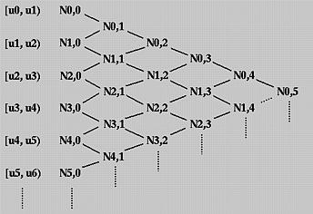

# B 样条与轨迹优化# 0、从离散到连续在移动机器人导航中，前端路径搜索（如 A* 或 RRT）通常输出一系列离散的路径点。这些点在几何上仅保证了C 0 C^0 C 0 C 2 C^2 C 2 P ( t ) P(t) P ( t ) B 样条 (Basis Spline) 因其独特的凸包性质 (Convex Hull Property) 和 局部支撑性 (Local Support) ，成为了将离散路径转化为连续轨迹的常用参数化工具。
# 1、B 样条基础理论# B 样条的通用数学定义一条 p 阶的 B 样条曲线P ( u ) P(u) P ( u ) { Q 0 , Q 1 , . . . Q N + 1 } \{Q_0,Q_1,...Q_{N+1} \} { Q 0 , Q 1 , . . . Q N + 1 } U = { u 0 , u 1 , . . . u N + p + 1 } U = \{u_0,u_1,...u_{N+p+1} \} U = { u 0 , u 1 , . . . u N + p + 1 }
P ( u ) = ∑ i = 0 N Q i N i , p ( u ) P(u) = \sum\limits^N\limits_{i=0}Q_iN_{i,p}(u)
P ( u ) = i = 0 ∑ N Q i N i , p ( u )
其中，N i , p ( u ) N_{i,p}(u) N i , p ( u )
N i , 0 ( u ) = { 1 , u i ≤ u < u i + 1 0 , otherwise N i , p ( u ) = u − u i u i + p − u i N i , p − 1 ( u ) + u i + p + 1 − u u i + p + 1 − u i + 1 N i + 1 , p − 1 ( u ) \begin{aligned}
N_{i,0}(u) &= \begin{cases} 1, & u_i \leq u < u_{i+1} \\ 0, & \text{otherwise} \end{cases} \\
N_{i,p}(u) &= \frac{u - u_i}{u_{i+p} - u_i} N_{i,p-1}(u) + \frac{u_{i+p+1} - u}{u_{i+p+1} - u_{i+1}} N_{i+1,p-1}(u)
\end{aligned}
N i , 0 ( u ) N i , p ( u ) = { 1 , 0 , u i ≤ u < u i + 1 otherwise = u i + p − u i u − u i N i , p − 1 ( u ) + u i + p + 1 − u i + 1 u i + p + 1 − u N i + 1 , p − 1 ( u )
约定 0 0 = 0 \frac{0}{0} = 0 0 0 = 0
停一下，上来就有那么多数学符号令人头大，让我们好好理解一下这些公式
# a. 节点 (Knots) 与节点向量 (Knot Vector)如果在一段轨迹中，控制点决定了轨迹 “长什么样”，那么节点 则决定了 “什么时候长成这样”。
定义 ：节点向量 U = { u 0 , u 1 , … , u m } U = \{u_0, u_1, \dots, u_m\} U = { u 0 , u 1 , … , u m } t t t s s s [ u i , u i + 1 ) [u_i, u_{i+1}) [ u i , u i + 1 ) 节点区间 ：每个区间 [ u i , u i + 1 ) [u_i, u_{i+1}) [ u i , u i + 1 ) 节点向量的类型 ：
均匀分布 (Uniform) ：节点间距相等（如 { 0 , 1 , 2 , 3 } \{0, 1, 2, 3\} { 0 , 1 , 2 , 3 } 准均匀分布 (Quasi-Uniform) ：在开头和结尾处重复 p + 1 p+1 p + 1 { 0 , 0 , 0 , 0 , 1 , 2 , 3 , 3 , 3 , 3 } \{0, 0, 0, 0, 1, 2, 3, 3, 3, 3\} { 0 , 0 , 0 , 0 , 1 , 2 , 3 , 3 , 3 , 3 } 这是轨迹规划中最常用的形式 ，因为它能强制曲线经过起点和终点 ，且起始 / 结束切线与控制点连线一致。
# b. Cox-de Boor 公式的直观理解这个公式看起来吓人，但本质上是线性插值 (Linear Interpolation) 的递归：
0 阶基函数 (p = 0 p=0 p = 0 N i , 0 ( u ) N_{i,0}(u) N i , 0 ( u ) [ u i , u i + 1 ) [u_i, u_{i+1}) [ u i , u i + 1 ) C − 1 C^{-1} C − 1 1 阶基函数 (p = 1 p=1 p = 1 u u u 三角形 (Hat Function) 。此时 C 0 C^0 C 0 2 阶基函数 (p = 2 p=2 p = 2 u u u u 2 u^2 u 2 C 1 C^1 C 1
为了理解 p 大于 0 时计算 Ni,p (u) 的方法，我们使用三角计算格式。所有节点区间列在左边（第一）列，所有零次基函数在第二列。见下图。

因此，第一列就是控制点，第二列是第一列控制点的线性插值，第三列是第列点的线性插值，以此类推。
# c. 为什么节点向量长度是 N + p + 2 N+p+2 N + p + 2 这是一个经典的 “生存空间” 问题，可以通过以下逻辑理解：
控制点与基函数的一一对应 ：N + 1 N+1 N + 1 Q 0 , … , Q N Q_0, \dots, Q_N Q 0 , … , Q N N i , p ( u ) N_{i,p}(u) N i , p ( u ) N + 1 N+1 N + 1
单个基函数的 “生存空间” (Support) ：
0 阶基函数（方块）需要 1 个节点区间 [ u i , u i + 1 ) [u_i, u_{i+1}) [ u i , u i + 1 )
1 阶基函数（三角形）由 2 个 0 阶方块合成，需要 2 个区间。
p p p p + 1 p+1 p + 1
推导过程 ：
第 0 个基函数 N 0 , p N_{0,p} N 0 , p u 0 u_0 u 0 u p + 1 u_{p+1} u p + 1
…
最后一个（第 N N N N N , p N_{N,p} N N , p u N u_N u N p + 1 p+1 p + 1
因此，它必须在 u N + p + 1 u_{N+p+1} u N + p + 1
结论 ：0 0 0 N + p + 1 N+p+1 N + p + 1 N + p + 2 N+p+2 N + p + 2
在工程实现中，为了提高计算效率，我们通常使用均匀 B 样条 。均匀 B 样条的节点向量U U U 重要结论： 在均匀 B 样条的条件下，基函数N i , p ( u ) N_{i,p}(u) N i , p ( u ) u i u_i u i 常数矩阵乘法 。
# 2、矩阵表达对于大部分移动机器人，我们希望路径的位置、速度和加速度是连续的，而这对应的正是三阶（Cubic）B 样条曲线（p = 3 p=3 p = 3
# 局部参数化对于任意时刻 t t t i i i [ t i , t i + 1 ) [t_i, t_{i+1}) [ t i , t i + 1 ) s ∈ [ 0 , 1 ] s \in [0, 1] s ∈ [ 0 , 1 ]
s = t − t i Δ t s = \frac{t - t_i}{\Delta t}
s = Δ t t − t i
此时，该段曲线 P i ( s ) P_i(s) P i ( s ) { Q i − 1 , Q i , Q i + 1 , Q i + 2 } \{Q_{i-1}, Q_i, Q_{i+1}, Q_{i+2}\} { Q i − 1 , Q i , Q i + 1 , Q i + 2 }
P i ( s ) = T ( s ) T M 3 Q l o c a l P_i(s) = T(s)^T M_3 Q_{local}
P i ( s ) = T ( s ) T M 3 Q l o c a l
其中：
时间向量 T ( s ) = [ s 3 , s 2 , s , 1 ] T T(s) = [s^3, s^2, s, 1]^T T ( s ) = [ s 3 , s 2 , s , 1 ] T 控制点向量 Q l o c a l = [ Q i − 1 , Q i , Q i + 1 , Q i + 2 ] T Q_{local} = [Q_{i-1}, Q_i, Q_{i+1}, Q_{i+2}]^T Q l o c a l = [ Q i − 1 , Q i , Q i + 1 , Q i + 2 ] T 基矩阵 M 3 M_3 M 3 (Standard Uniform Cubic B-Spline Matrix)：
M 3 = 1 6 [ − 1 3 − 3 1 3 − 6 3 0 − 3 0 3 0 1 4 1 0 ] M_3 = \frac{1}{6} \begin{bmatrix} -1 & 3 & -3 & 1 \\ 3 & -6 & 3 & 0 \\ -3 & 0 & 3 & 0 \\ 1 & 4 & 1 & 0 \end{bmatrix}
M 3 = 6 1 ⎣ ⎢ ⎢ ⎢ ⎡ − 1 3 − 3 1 3 − 6 0 4 − 3 3 3 1 1 0 0 0 ⎦ ⎥ ⎥ ⎥ ⎤
# 矩阵特性的直观验证
起点 (s = 0 s=0 s = 0 ：P i ( 0 ) = 1 6 ( Q i − 1 + 4 Q i + Q i + 1 ) P_i(0) = \frac{1}{6}(Q_{i-1} + 4Q_i + Q_{i+1}) P i ( 0 ) = 6 1 ( Q i − 1 + 4 Q i + Q i + 1 ) Q i Q_i Q i 终点 (s = 1 s=1 s = 1 ：P i ( 1 ) = 1 6 ( Q i + 4 Q i + 1 + Q i + 2 ) P_i(1) = \frac{1}{6}(Q_i + 4Q_{i+1} + Q_{i+2}) P i ( 1 ) = 6 1 ( Q i + 4 Q i + 1 + Q i + 2 ) P i + 1 ( 0 ) P_{i+1}(0) P i + 1 ( 0 ) C 0 C^0 C 0 导数连续 ：通过对 T ( s ) T(s) T ( s ) C 2 C^2 C 2
# B 样条的关键性质为什么轨迹优化领域偏爱 B 样条？这归功于以下两个数学性质:
# 凸包性质 (Convex Hull Property)从数学定义上看，由于 B 样条的基函数满足非负性且具有单位分解性（即所有基函数之和为 1），这使得曲线上的任意一点P ( u ) P(u) P ( u ) p + 1 p+1 p + 1 只要控制点构成的凸多边形（或者简单地认为是控制点本身及其连线）不与障碍物相交，那么生成的轨迹就绝对安全。 这使得我们只需对少量的控制点进行避障约束，即可保证整条轨迹的安全性。
事实上，在实际工程运用中，我们有时会做进一步的简化。比如仅保证控制点本身距离障碍物的距离大于阈值。
# 局部支撑性 (Local Support)根据 B 样条曲线的性质，p 阶 B 样条曲线的基函数N i , p ( u ) N_{i,p}(u) N i , p ( u ) 上非零。这意味 ∗ ∗ 着移动第 i 个控制点，只会改变该时间段内局部的曲线形状，而对轨迹的其余部分没有任何影响。 ∗ ∗ 比如说，对于一个三阶 B 样条曲线，改变一个控制点的位置，只会影响局部的 4 段曲线。因此，在计算梯度 上非零。这意味 **着移动第 i 个控制点，只会改变该时间段内局部的曲线形状，而对轨迹的其余部分没有任何影响。** 比如说，对于一个三阶B样条曲线，改变一个控制点的位置，只会影响局部的4段曲线。
因此，在计算梯度 上 非 零 。 这 意 味 ∗ ∗ 着 移 动 第 i 个 控 制 点 ， 只 会 改 变 该 时 间 段 内 局 部 的 曲 线 形 状 ， 而 对 轨 迹 的 其 余 部 分 没 有 任 何 影 响 。 ∗ ∗ 比 如 说 ， 对 于 一 个 三 阶 B 样 条 曲 线 ， 改 变 一 个 控 制 点 的 位 置 ， 只 会 影 响 局 部 的 4 段 曲 线 。 因 此 ， 在 计 算 梯 度 时，我们不再需要遍历整条轨迹，而是只需要更新计算控制点 时，我们不再需要遍历整条轨迹，而是只需要更新计算控制点 时 ， 我 们 不 再 需 要 遍 历 整 条 轨 迹 ， 而 是 只 需 要 更 新 计 算 控 制 点 邻域内的几项代价，这将单次迭代的时间复杂度从 邻域内的几项代价，这将单次迭代的时间复杂度从 邻 域 内 的 几 项 代 价 ， 这 将 单 次 迭 代 的 时 间 复 杂 度 从 降低到了 降低到了 降 低 到 了
# 2、从路径到曲线理解了 B 样条的这些优良性质，我们似乎已经准备好进行优化了。但是，优化器需要一组初始的控制点作为起点。前端 A* 给我们的只是一串折线路径点，我们该如何把这串折线转换成一条 B 样条曲线的控制点呢？
我们需要解决一个逆向问题：已知曲线需要经过的路径点 W W W Q Q Q P ( t ) P(t) P ( t )
# 预处理：重采样在求解控制点之前，我们首先要解决 A* 路径点分布不均的问题，A* 的输出通常是稀疏的。因此，第一步是均匀重采样。我们沿着 A* 的折线路径，每隔固定距离插入一个新的点。这样我们得到了一串密集的、等间距的路径点序列 $ D={D_0,D_1,…D_N} $
我们的数学模型假设节点是均匀分布的（时间间隔相等）。因为假设机器人大致匀速运动，所以空间上等间距的重采样点，正好对应了时间上等间距的节点向量。
# 反求控制点：解线性方程组现在我们手上有一串等间距的路径点 D = { D 0 , D 1 , … , D N } D = \{D_0, D_1, \dots, D_N\} D = { D 0 , D 1 , … , D N } Q Q Q 恰好经过每一个路径点 。
# a. 建立插值方程回顾上面推导的矩阵表达式。在第 i i i s = 0 s = 0 s = 0
T ( 0 ) = [ 0 , 0 , 0 , 1 ] T T(0) = [0, 0, 0, 1]^T
T ( 0 ) = [ 0 , 0 , 0 , 1 ] T
代入矩阵方程 P i ( s ) = T ( s ) T M 3 Q l o c a l P_i(s) = T(s)^T M_3 Q_{local} P i ( s ) = T ( s ) T M 3 Q l o c a l T ( 0 ) T M 3 T(0)^T M_3 T ( 0 ) T M 3 M 3 M_3 M 3 最后一行 ：
T ( 0 ) T M 3 = 1 6 [ 1 , 4 , 1 , 0 ] T(0)^T M_3 = \frac{1}{6}[1,\ 4,\ 1,\ 0]
T ( 0 ) T M 3 = 6 1 [ 1 , 4 , 1 , 0 ]
因此：
P i ( 0 ) = 1 6 ( Q i − 1 + 4 Q i + Q i + 1 ) \boxed{P_i(0) = \frac{1}{6}\left(Q_{i-1} + 4Q_i + Q_{i+1}\right)}
P i ( 0 ) = 6 1 ( Q i − 1 + 4 Q i + Q i + 1 )
核心思路 ：令每个路径点 D i D_i D i i i i D i = P i ( 0 ) D_i = P_i(0) D i = P i ( 0 ) i = 0 , 1 , … , N i = 0, 1, \dots, N i = 0 , 1 , … , N N + 1 N+1 N + 1
Q i − 1 + 4 Q i + Q i + 1 = 6 D i , i = 0 , 1 , … , N Q_{i-1} + 4Q_i + Q_{i+1} = 6D_i, \quad i = 0, 1, \dots, N
Q i − 1 + 4 Q i + Q i + 1 = 6 D i , i = 0 , 1 , … , N
但注意：这里的控制点下标范围是 − 1 -1 − 1 N + 1 N+1 N + 1 N + 3 N+3 N + 3 N + 1 N+1 N + 1 边界条件 来补上。
# b. 边界条件：自然样条最常用的边界条件是自然边界（Natural Boundary） ：令曲线在起点和终点处的二阶导数（加速度）为零 。
对三次 B 样条，加速度为零等价于两端的控制点满足对称关系：
Q − 1 = 2 Q 0 − Q 1 （起点） Q_{-1} = 2Q_0 - Q_1 \qquad \text{（起点）}
Q − 1 = 2 Q 0 − Q 1 （起点）
Q N + 1 = 2 Q N − Q N − 1 （终点） Q_{N+1} = 2Q_N - Q_{N-1} \qquad \text{（终点）}
Q N + 1 = 2 Q N − Q N − 1 （终点）
将这两个约束代入边界处的方程：
这个结论很直观：在自然边界条件下，两端的控制点就等于路径的端点本身 。
# c. 组装线性方程组消去 "幽灵控制点" Q − 1 Q_{-1} Q − 1 Q N + 1 Q_{N+1} Q N + 1 i = 1 , … , N − 1 i = 1, \dots, N-1 i = 1 , … , N − 1
Q i − 1 + 4 Q i + Q i + 1 = 6 D i Q_{i-1} + 4Q_i + Q_{i+1} = 6D_i
Q i − 1 + 4 Q i + Q i + 1 = 6 D i
加上边界方程 Q 0 = D 0 Q_0 = D_0 Q 0 = D 0 Q N = D N Q_N = D_N Q N = D N ( N + 1 ) × ( N + 1 ) (N+1) \times (N+1) ( N + 1 ) × ( N + 1 ) 对称三对角线性方程组 ：
1 6 [ 6 1 4 1 ⋱ ⋱ ⋱ 1 4 1 6 ] ⏟ A [ Q 0 Q 1 ⋮ Q N − 1 Q N ] = [ D 0 D 1 ⋮ D N − 1 D N ] \underbrace{\frac{1}{6}\begin{bmatrix}
6 & & & & \\
1 & 4 & 1 & & \\
& \ddots & \ddots & \ddots & \\
& & 1 & 4 & 1 \\
& & & & 6
\end{bmatrix}}_{A}
\begin{bmatrix} Q_0 \\ Q_1 \\ \vdots \\ Q_{N-1} \\ Q_N \end{bmatrix}
=
\begin{bmatrix} D_0 \\ D_1 \\ \vdots \\ D_{N-1} \\ D_N \end{bmatrix}
A 6 1 ⎣ ⎢ ⎢ ⎢ ⎢ ⎢ ⎡ 6 1 4 ⋱ 1 ⋱ 1 ⋱ 4 1 6 ⎦ ⎥ ⎥ ⎥ ⎥ ⎥ ⎤ ⎣ ⎢ ⎢ ⎢ ⎢ ⎢ ⎢ ⎡ Q 0 Q 1 ⋮ Q N − 1 Q N ⎦ ⎥ ⎥ ⎥ ⎥ ⎥ ⎥ ⎤ = ⎣ ⎢ ⎢ ⎢ ⎢ ⎢ ⎢ ⎡ D 0 D 1 ⋮ D N − 1 D N ⎦ ⎥ ⎥ ⎥ ⎥ ⎥ ⎥ ⎤
# d. 求解与理解这个三对角矩阵具有极好的计算性质：
它是严格对角占优 的（对角元素 4 4 4 1 + 1 = 2 1+1=2 1 + 1 = 2 有唯一解且数值稳定 。
可以用 **Thomas 算法（追赶法）** 在 O ( N ) O(N) O ( N ) O ( N 3 ) O(N^3) O ( N 3 )
求解后得到 Q 0 , Q 1 , … , Q N Q_0, Q_1, \dots, Q_N Q 0 , Q 1 , … , Q N
Q − 1 = 2 Q 0 − Q 1 , Q N + 1 = 2 Q N − Q N − 1 Q_{-1} = 2Q_0 - Q_1, \qquad Q_{N+1} = 2Q_N - Q_{N-1}
Q − 1 = 2 Q 0 − Q 1 , Q N + 1 = 2 Q N − Q N − 1
这样我们就完整得到了 N + 3 N+3 N + 3 初始解 。
小结 ：整个过程如下图所示。N + 1 N+1 N + 1 D D D Q Q Q
# 3、构建优化问题[TODO]
# 参考文献知乎专栏 - 曲线篇：深刻理解 B 样条曲线（上）